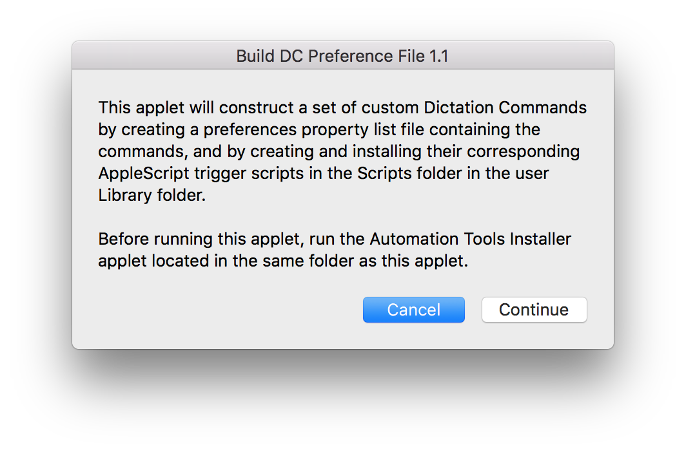
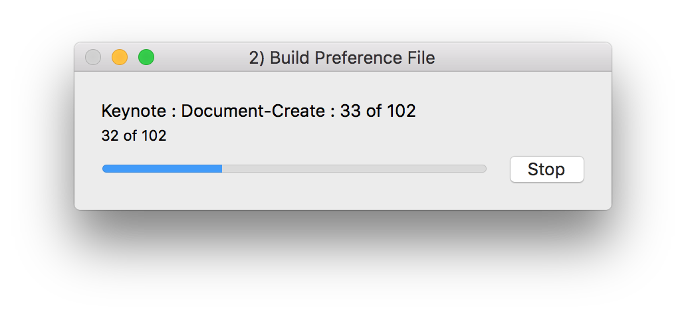
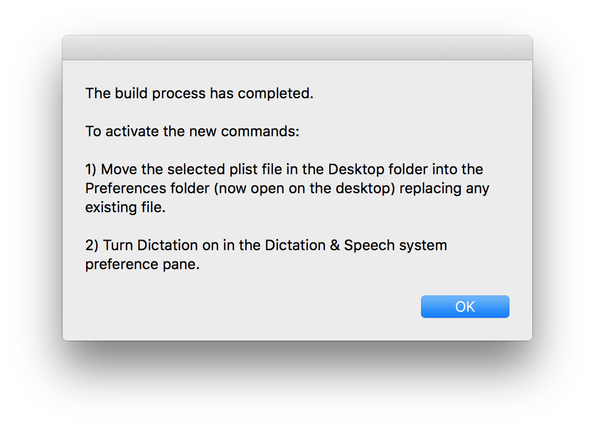
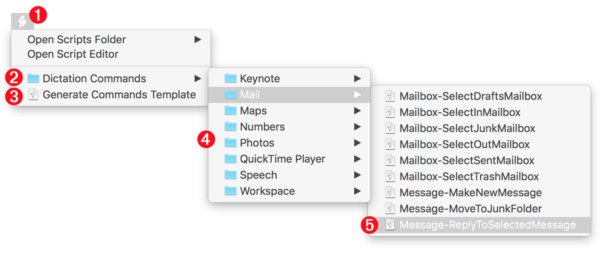

Build the Preference File
The speech recognition service used by Dictation Commands stores a detailed list of user-created custom dictation commands in a preference file located in the Preferences folder within your Library folder:
Home ▶ Library ▶ Preferences
The preference file, which is not really intended to be viewed or edited by the user, is aptly named:
com.apple.speech.recognition.AppleSpeechRecognition.CustomCommands.plist
When you turn on enhanced dictation in the System Preferences application, the speech recognition architecture reads this preference file to create and activate the dictation commands listed within the file.
As part of the installation process for this custom Dictation Commands set, a new preference file is created for you, containing hundreds of specialized dictation commands, and is placed on the Desktop. After creation of the new file, you install it by dragging the new file into the Preferences folder.
Having completed the installation of the script libraries, you can now build the custom commands preference file.
DO THIS ►Launch the script applet titled “2) Build Preference File” which will display an opening dialog. To begin the installation, click the “Continue” button. (⬇ see below )

The script will begin creating the preference file property list and generating and installing the numerous script files used to link the dictation commands with the functions in the previously installed Script Libraries.
During this process, a progress window will be displayed, detailing the current procedure: (⬇ see below )

Once the creation of the preference file and triggering scripts has completed, a second dialog will be displayed: (⬇ see below )

The script will have opened two Finder windows on the Desktop:
- The Preferences folder containing the existing custom dictation commands preference file
- The Desktop folder containing the created custom dictation commands preference file
The preference files will be selected within each of the two windows.
DO THIS ►To install the new dictation commands preference file, move it from the Desktop folder window into Preferences folder window, replacing the existing file.
IMPORTANT: It is really, really, (yes, really!) recommended that you make a copy of the existing custom dictation commands preference file before replacing it.
DO THIS ►Turn Dictation on in the Dictation system preference pane. The custom dictation commands are now active.
Script Menu
During the installation process, individual scripts were created for each of the custom dictation commands. These scripts are used by the speech recognition services to execute the various functions within the Script Libraries. The installed scripts can also be used for testing purposes, to execute any command without needing to have Dictation turned on.
To access the scripts, click on the Script Menu in the top menu bar: (⬇ see below )

1 Script Menu • The system-wide Script Menu is located at the top right of the main menu bar. Controls for turning it off or on are located in the Preferences window of the Script Editor application.
2 Dictation Commands folder • The Dictation Commands folder is located with the Scripts folder in the user Library folder. It contains all of the triggering scripts used by the OS speech recognition service.
3 Generate Commands Template • This script can be used by developers to create their own custom dictation commands collections.
4 Category Folders • These folders (contained within the Dictation Commands folder 2 ) hold the scripts for each category or application targeted by the custom dictation commands.
5 Category Scripts • The individual scripts for a specific application or category.
Any of these scripts are executed by simply selecting them from the Script Menu. To open a script for editing, hold down the Option key (⌥) when selecting the script, and it will be opened in the Script Editor application. To view the script file, hold down the Shift key (⇧) when selecting the script, and it will be revealed in the Finder desktop.